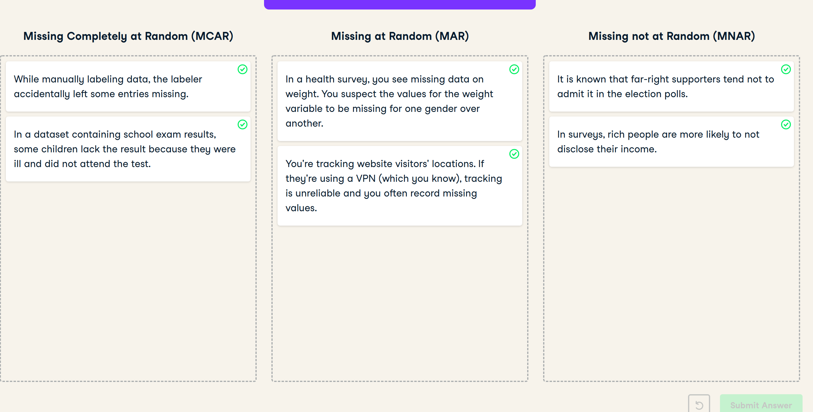
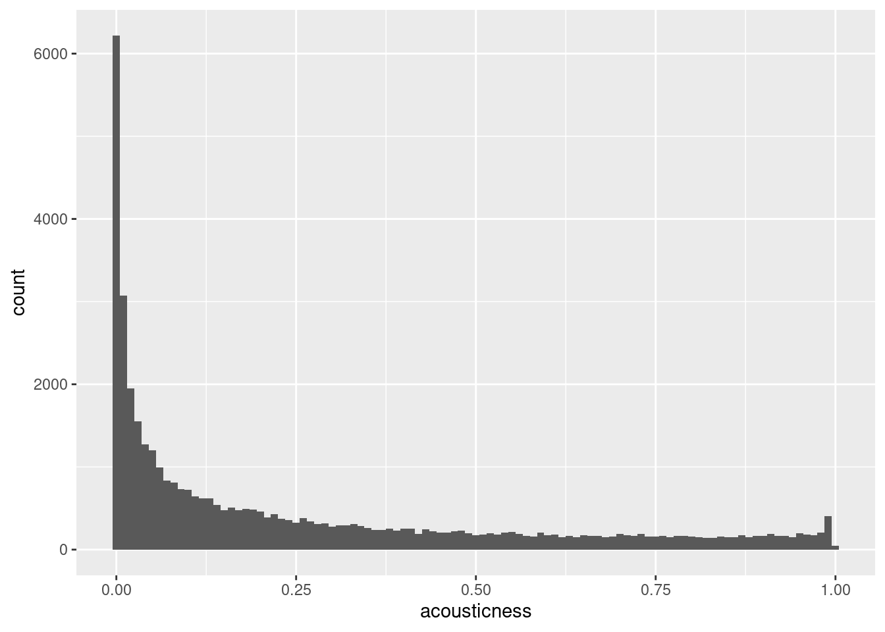
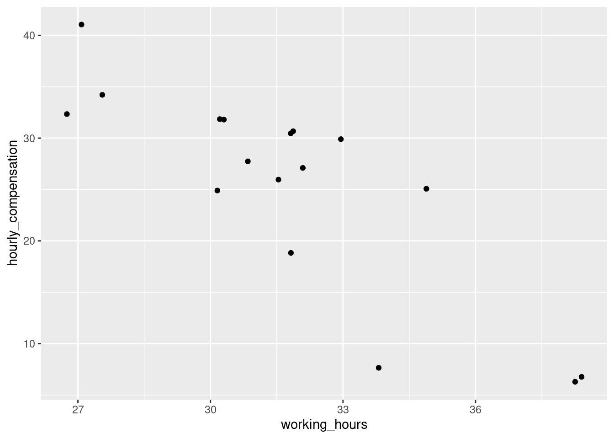
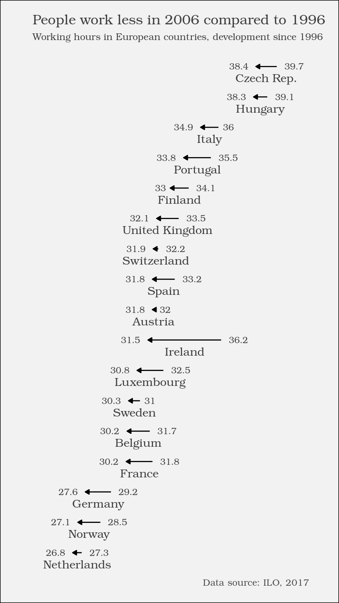
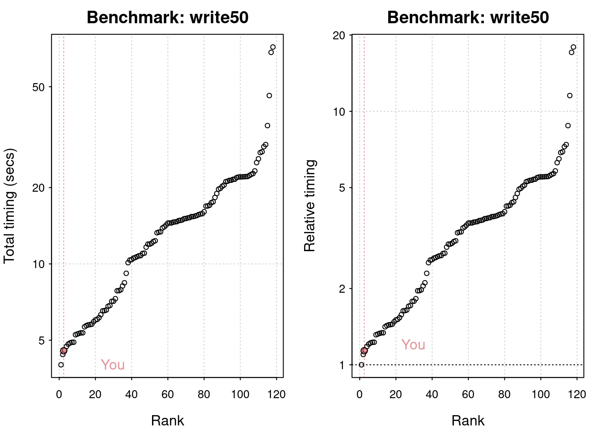
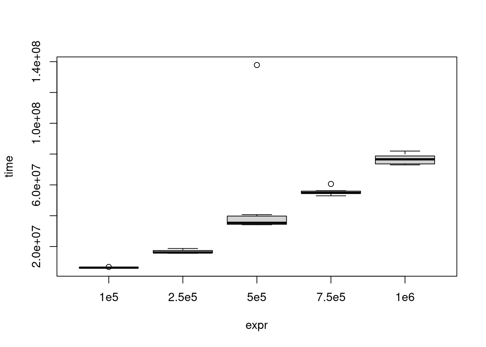
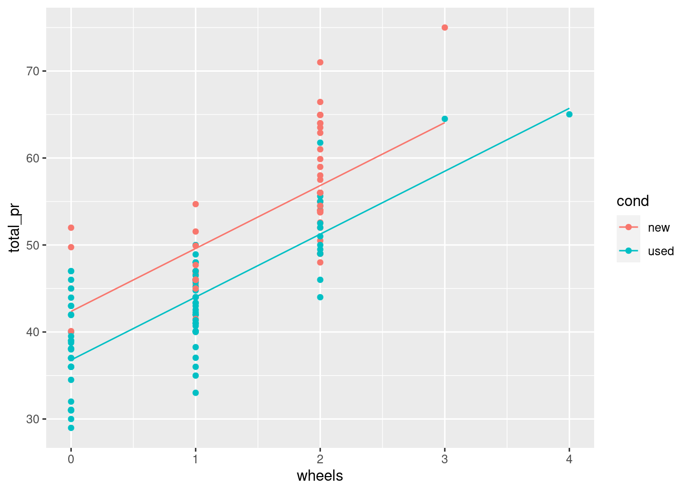
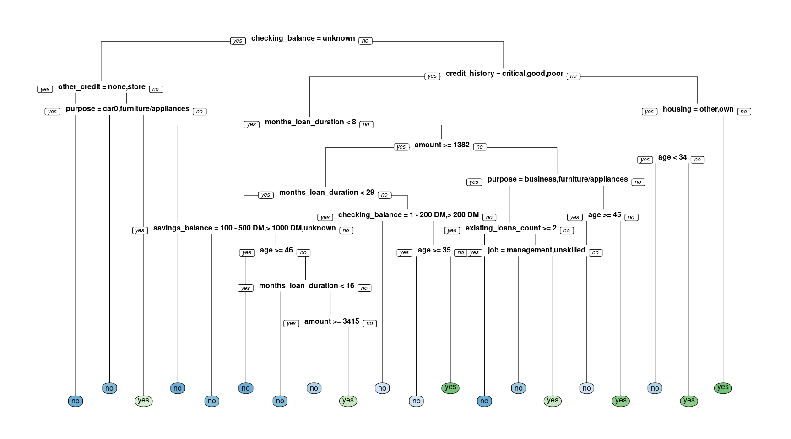

Personal Blog
Home
Data Camp Courses
About
Categories
All
(25)
analysis
(1)
code
(1)
Introduction to the OpenAI API
Software applications, web browser experiences, and even whole products are being built on top of the OpenAI API. In this exercise, you’ll be able to explore an application…
Jan 23, 2024
Introduction to Shell
An operating system like Windows, Linux, or Mac OS is a special kind of program. It controls the computer’s processor, hard drive, and network connection, but its most…
Jan 19, 2024
Python Data Science Toolbox (Part 1)
In the video, you learned of another standard Python datatype, strings. Recall that these represent textual data. To assign the string ‘DataCamp’ to a variable company, you…
Oct 5, 2023
Data Manipulation with pandas
When you get a new DataFrame to work with, the first thing you need to do is explore it and see what it contains. There are several useful methods and attributes for this.
Sep 24, 2023
Intermediate Python
With matplotlib, you can create a bunch of different plots in Python. The most basic plot is the line plot. A general recipe is given here.
Sep 19, 2023
Introduction to Python
Python Basics
Sep 16, 2023
Mburu
Intermediate Regression in R
In Introduction to Regression in R, you learned to fit linear regression models with a single explanatory variable. In many cases, using only one explanatory variable limits…
Jun 6, 2023
Mburu
Survival Analysis R
In this course, we will frequently use the GBSG2 dataset. This dataset contains information on breast cancer patients and their survival. In this exercise, we will take a…
May 13, 2023
Foundations of Probability in R
In these exercises, you’ll practice using the rbinom() function, which generates random “flips” that are either 1 (“heads”) or 0 (“tails”).
Feb 5, 2023
Introduction to Statistics with R
In this chapter, you’ll be working with the 2018 Food Carbon Footprint Index from nu3. The food_consumption dataset contains information about the kilograms of food consumed…
Jan 17, 2023
Functions in R
One way to make your code more readable is to be careful about the order you pass arguments when you call functions, and whether you pass the arguments by position or by name.
Dec 10, 2022

Handling Missing Data with Imputations in R
Missing data is a common problem and dealing with it appropriately is extremely important. Ignoring the missing data points or filling them incorrectly may cause the models…
Dec 3, 2022
Anomaly Detection in R
In this exercise, you’ll explore the river dataset which will be used throughout this chapter to illustrate the use of common anomaly detection techniques. The river data is…
Nov 3, 2022
Mburu

Sampling in R
Sampling is an important technique in your statistical arsenal. It isn’t always appropriate though—you need to know when to use it and when to work with the whole dataset.
Sep 9, 2022
Introduction to advanced dimensionality reduction
code
analysis
You will use the MNIST dataset in several exercises through the course. Let’s do some data exploration to gain a better understanding. Remember that the MNIST dataset…
Apr 8, 2022
Mburu
Census data in r with tidycensus
tidycensus is an R package designed to return data from the US Census Bureau ready for use within the Tidyverse.
Feb 23, 2022
Modeling with tidymodels in R
The rsample package is designed to create training and test datasets. Creating a test dataset is important for estimating how a trained model will likely perform on new…
Dec 10, 2021

Communicating with Data in the Tidyverse
In the video, you have learned that the inner_join() function of dplyr needs to be given a “key” on which two data frames are joined. Actually, multiple keys that need to…
Nov 8, 2021
Mburu

The reduction in weekly working hours in Europe
Looking at the development between 1996 and 2006
The
International Labour Organization (ILO)
has many data sets on working conditions. For example, one can look at how weekly working hours have been decreasing in many…
Nov 8, 2021
Mburu

Writing Efficient R Code
One of the relatively easy optimizations available is to use an up-to-date version of R. In general, R is very conservative, so upgrading doesn’t break existing code.…
Aug 13, 2021
Mburu

Scalable Data Processing in R
If you are processing all elements of two data sets, and one data set is bigger, then the bigger data set will take longer to process. However, it’s important to realize…
Apr 13, 2021
Mburu

Multiple Linear and Logistic Regression in R
We use the lm() function to fit linear models to data. In this case, we want to understand how the price of MarioKart games sold at auction varies as a function of not only…
Apr 13, 2021
Mburu
Network analysis in R
Here you will learn how to create an igraph ‘object’ from data stored in an edgelist. The data are friendships in a group of students. You will also learn how to make a…
Jun 19, 2020
Mburu
String manipulation with stringr in r
Let’s get started by entering some strings in R. In t he video you saw that you use quotes to tell R to interpret something as a string. Both double quotes (“) and single…
May 31, 2020
Mburu

ML with tree based models in r
Let’s get started and build our first classification tree. A classification tree is a decision tree that performs a classification (vs regression) task. You will train a…
Apr 4, 2020
Mburu
No matching items